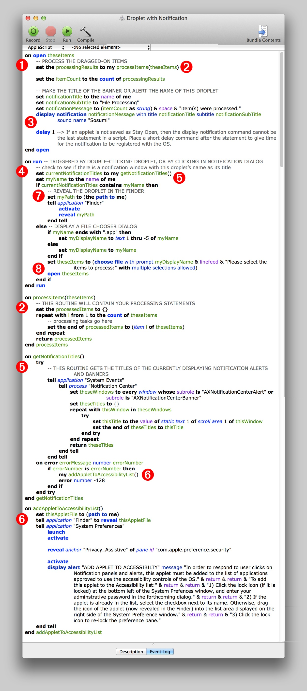
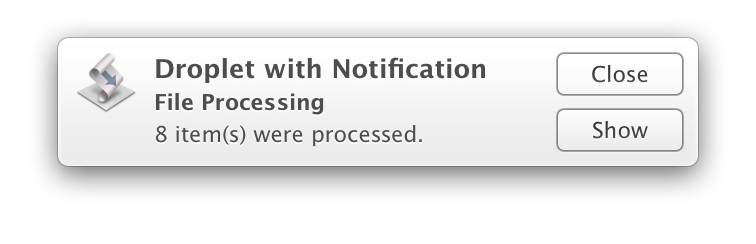
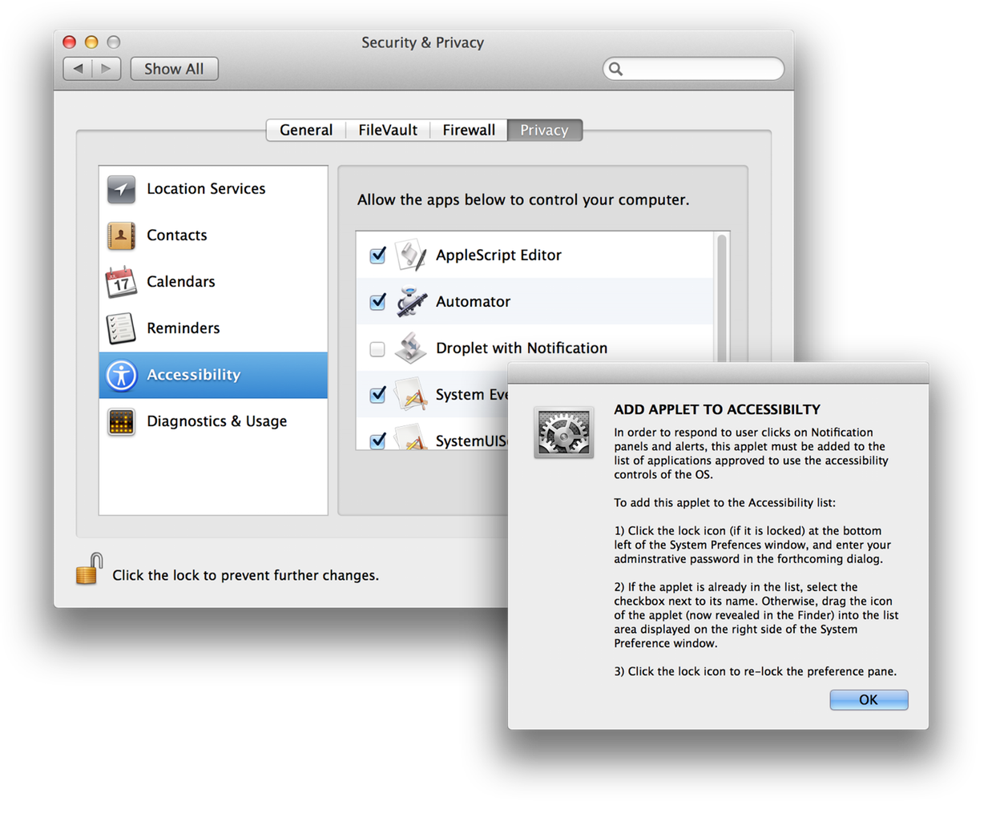

This segment details the options in how AppleScript applications can be implemented to respond to user interaction with notification windows triggered by the AppleScript applications.
Specifically, in OS X Mavericks (v10.9), clicking on a notification window (banner or alert) posted by a script application, will cause a run event to be sent to the triggering AppleScript applet|droplet. Essentially, this means the script will attempt to run again—an action the script must be prepared to handle.
The example AppleScript droplet provided here, contains code showing options in how to design a script application that can handle a run event triggered by direct user-interaction, or by the Notification Center.
DOWNLOAD the example AppleScript droplet application, and open it for viewing, by dragging its icon onto the AppleScript Editor’s icon.
The following are the components of the example script:
(1) The “open” Handler - This routine is triggered whenever items are dragged onto the applet’s icon in the Finder or Dock. When triggered, the variable theseItems will contain file references (in alias format) to all of the dragged-on items.
(2) The “processItems” Handler - The input items from the open handler are passed to this routine (located farther down in the script) which is where you’ll place the script code for processing the passed items. This handler should return to the open handler, a list of references to the items that resulted from the processing.
(3) The Display Notification Command - The script uses this command to trigger the display of a notification window. Note that the name of this droplet was used as the title of the notification (placed in the variable notificationTitle), along with a message containing the number of items that were processed by the process handler.
Since the script statement containing the display notification command is the last script statement executed before the script stops, it is followed by a script statement containing a delay command, in order to give the application enough time to trigger the notification before it quits.
These first three items are the standard script routines and commands, required for processing files dragged onto the droplet, and then posting a notification when the processing has completed. Next we’ll examine the routines that are designed to respond to user-interaction with the droplet, or with the notification dialog. (begins after the image below)

(4) The “run” Handler - The run handler of a script application is called by AppleScript whenever:
- the script applet|droplet is launched from the Finder by either double-clicking its icon, or selecting its icon and choosing Open from the Finder’s File menu; or
- the script applet|droplet is launched from the Dock by clicking its icon; or
- the notification window, that was triggered by the script, is clicked by the user.
For the purposes of this advanced script example, the run handler will do the following:
- Determine whether the handler was triggered by a direct user action on the application, or by the Notification Center when the user clicks the notification banner or alert.
- This check is accomplished by executing a routine that uses the OS Accessibility frameworks (5) to see if Notification Center is currently displaying a banner or alert that uses this droplet’s name, as its title.
- If the handler was triggered by the Notification Center, the script will tell the Finder to activate (come to the front), and reveal the selected applet|droplet icon. (7)
- But, if the handler was triggered by direct user action on the applet|droplet, the script will display a file selection dialog (using the choose file command), and then pass the chosen file references to the open handler to execute. (8)
(5) The “getNotificationTitles” Handler - This specialized routine uses the OS Accessibility frameworks to get and return a list of the titles of all currently open notification banners or alerts.
(5) The “addAppletToAccessibilityList” Handler - If this droplet|applet is not in the list of applications approved to access the Accessibility frameworks on the computer, this routine will open the System Preferences application to the Accessibility controls in the Privacy preference pane, and prompt the user on how to add this droplet|applet to the Accessibility List of approved applications.
For a complete overview of using AppleScript with the Accessibility frameworks, see the GUI Scripting topic in the Mavericks automation overview on this site.
To test the droplet, simply drag some files onto the droplet’s icon in the Finder. Dont’t worry, the example droplet does not contain any processing code, so your files will be safe.
Once the droplet has completed, a notification banner will appear:

Click on the banner, and the script will attempt to check with Notification Center by using the Accessibility frameworks. Since the droplet has not yet been granted access to the frameworks, the System Preferences app will be launched, and a prompt dialog displayed. Follow the steps listed in the dialog, and the droplet will function without interruption.

If you plan to create and|or run AppleScript applications that use the Accessibility frameworks, you should review the GUI Scripting topic in the Mavericks automation overview on this site.